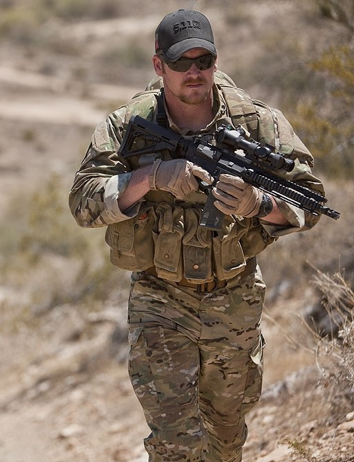

Life in War

Chris Kyle
Chris Kyle is one of the most famous war veteran guys and wrote two books: American Sniper and American Gun. Chris Kyle had over 160 confirmed kills in the Iraq war after 9/11. He was on four combat deployments and in several of the largest battle of the whole war such as Ramadi and the Second Battle of Fallujah. He claims that he killed closer to 250, but they weren't able to confirm all of them. In Iraq he had several close near death experiences where he had his helmet shot through and had a bullet stopped by a bulletproof plate in his MOLLE vest. Kyle also had a grenade explode near his leg but the .45 pistol in his holster stopped a large piece of shrapnel from impaling his leg. During the war he lost two men in his unit Ryan Job(pronounced Jobe) and Marc Lee. Ryan Job was shot in the eye and survived until 2011 I think he lost sight in both eyes from brain swelling though. In 2011 he died during an operating procedure gone wrong. Marc Lee died on the battlefield during a house raid where he was shot through a window.
Family and Business
He had two kids with his wife Taya Kyle. Since he was a Navy SEAL he was almost always away at war which meant he didn't get to spend much time with his kids until he left in 2009 after 10 years of service. He personally wished that he could spend more times with the teams but he also needed to be with his family. He had a company called Craft International where he would work with law enforcment and train them to better do their job. He also dedicated lots of his time on weekend retreats with war veterans who had PTSD from the wars in Iraq and Afghanistan. He died in 2013. Him and one of his friends were shot by a ex-Marine with PTSD at a shooting range in Texas. After this in 2014 Craft International went bankrupt.
Books
His book American Sniper is a great book that covers most of his life. In this book he talks about his life as a kid, through BUD/S, and into war. American Gun is a book that is about the history of America covered by 10 guns. I haven't read this book personally but it is supposed to be good and he is a great author. I strongly suggest that you read American Sniper though as this is a great book that covers loads of things.